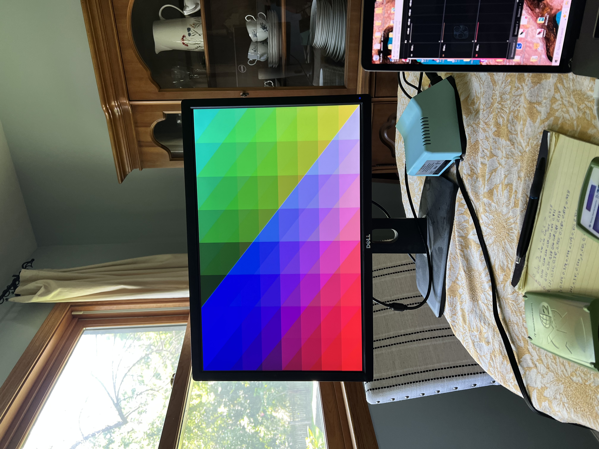

Ben Whitlock

Franz Ferdinand was the eldest son of Archduke Karl Ludwig of Austria, the younger brother of Emperor Franz Joseph I of Austria. Following the death of Crown Prince Rudolf in 1889 and the death of Karl Ludwig in 1896, Franz Ferdinand became the heir presumptive to the Austro-Hungarian throne...